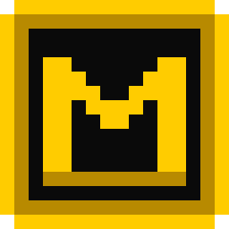

MISTERCRAFT
LAUNCHER
MISTER
CRAFT
Лаунчер Minecraft Java Edition
ВЫБРАННАЯ ВЕРСИЯ
—
MEDIEVAL FANTASY
Погрузись в огромную фэнтезийную вселенную Minecraft с магией, существами, боссами и средневековыми королевствами.
Настройки
✕
Оперативная память:
Java
Обзор…
«Авто» — лаунчер сам подберёт или скачает нужную Java для выбранной версии.
Сворачивать лаунчер при запуске игры
Открыть папку модов
Открыть папку Minecraft
Аккаунт
✕
Вход через Microsoft
Откройте страницу Microsoft и введите код:
—
Открыть страницу
Копировать код
Отмена
Войти через Microsoft
Azure Client ID
Нужен для входа Microsoft. Создаётся бесплатно в Azure (см. README).
Офлайн-профиль
Добавить
Для игры без лицензии доступны только одиночная игра и серверы без проверки лицензии.
Установленные версии
✕
Открыть папку Minecraft
MISTERCRAFT
MEDIEVAL
FANTASY
Minecraft 1.20.1 · Forge · отдельная сборка
Играть
Остановить игру
Продолжить приключение
Мои миры
Управление модами
Настройки графики
Выбор шейдеров
Обновление сборки
← Вернуться в MisterCraft
Мои миры
✕
Открыть папку миров
Настройки графики
✕
Профиль
Оперативная память:
Дальность прорисовки:
Дальность симуляции:
Применяется при запуске игры. Шейдеры включаются в профилях «Сбалансированный» и «Ультра» (выбор шейдера — в разделе «Выбор шейдеров»).
Шейдеры
✕
Установленные
Рекомендуемые (с Modrinth, для 1.20.1)
Открыть папку шейдеров
Обновление сборки
✕
Проверить обновления
Обновить всё
Доустановить недостающее
Обновляются моды сборки. Версия игры (1.20.1) и Forge не меняются.
Отчёт об установке
✕
Моды
✕
Каталог
Установленные
Папка модов
Только совместимые с выбранной версией
Показать ещё
Проверить обновления
Загрузка…
Отменить
Скины
✕
Загрузить PNG
Создать свой скин
Редактор скина
✕
Кисть
Ластик
Заливка
Пипетка
Обычный (Steve)
Тонкий (Alex)
Отменить
Шаблон
Очистить
Сохранить скин
Журнал игры
✕